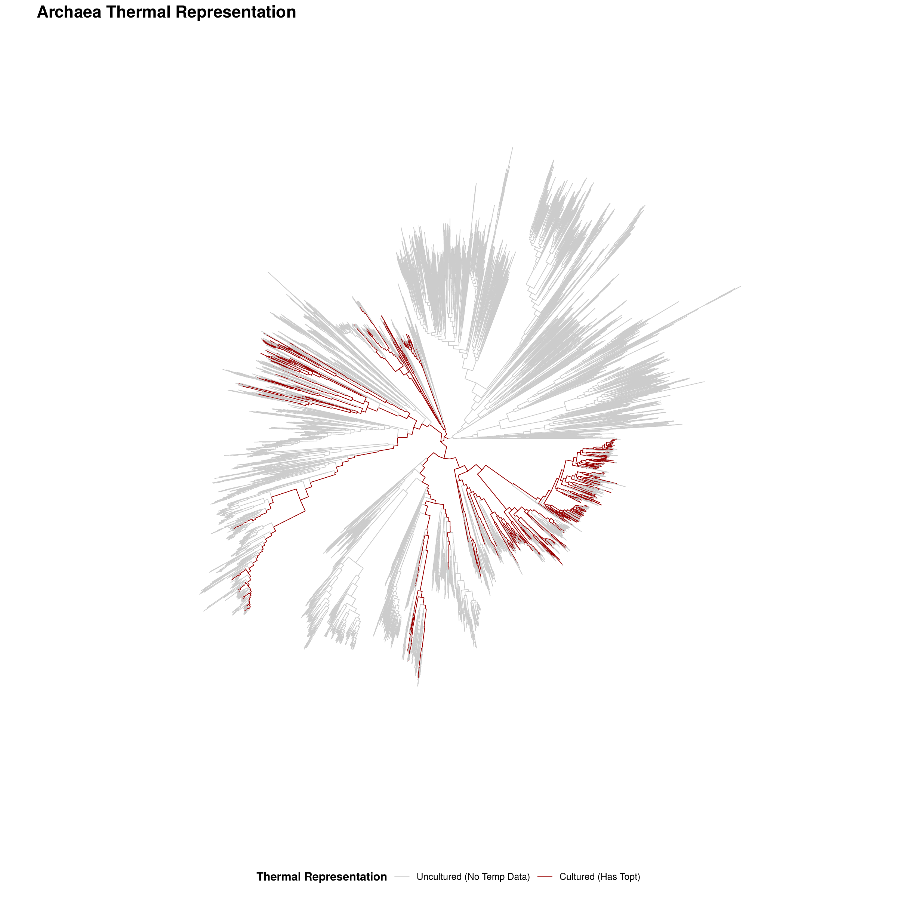
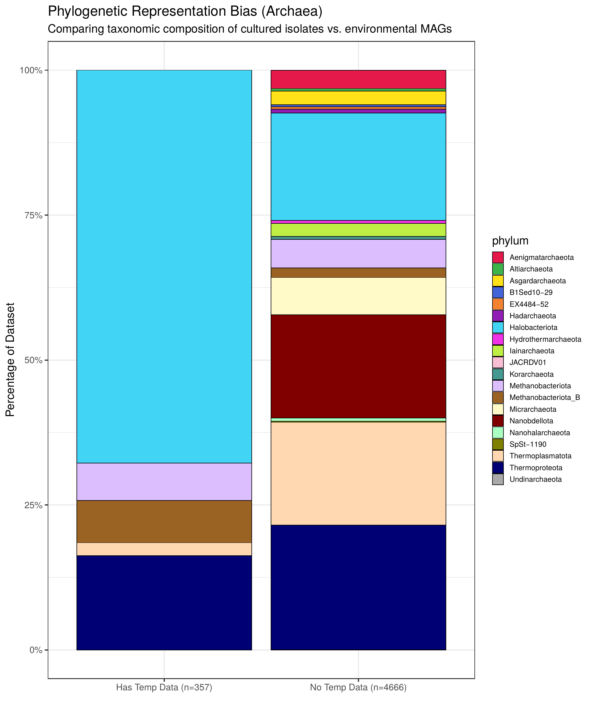
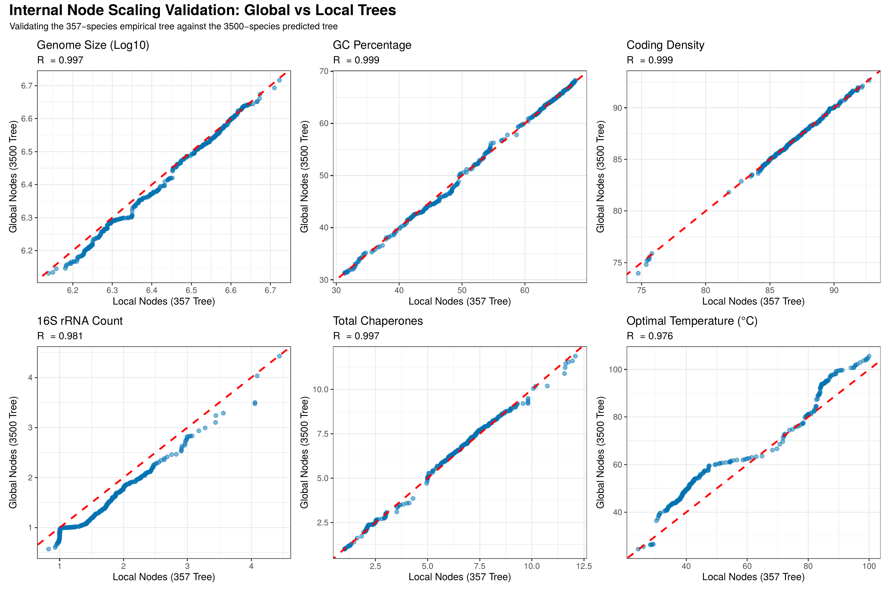
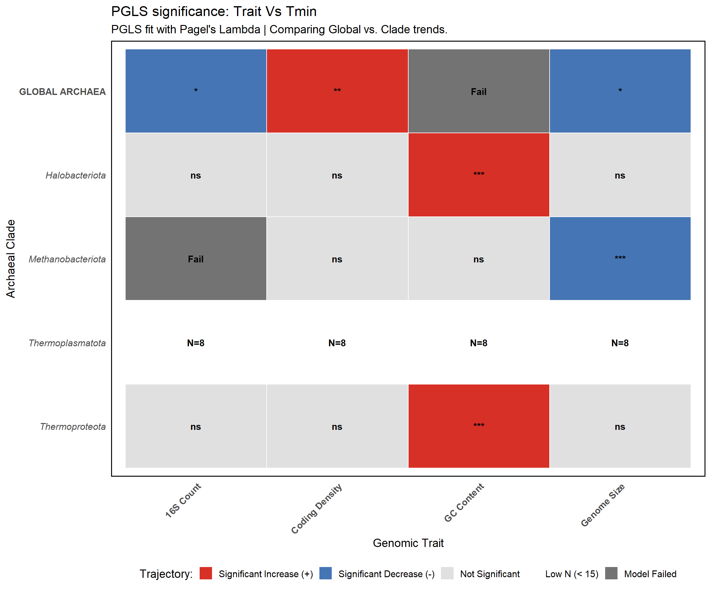
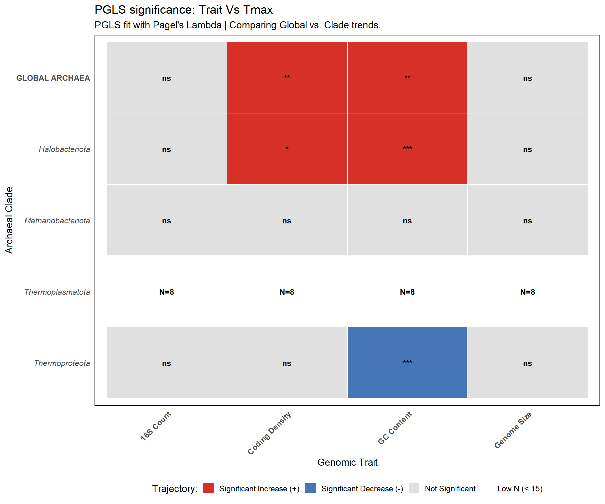
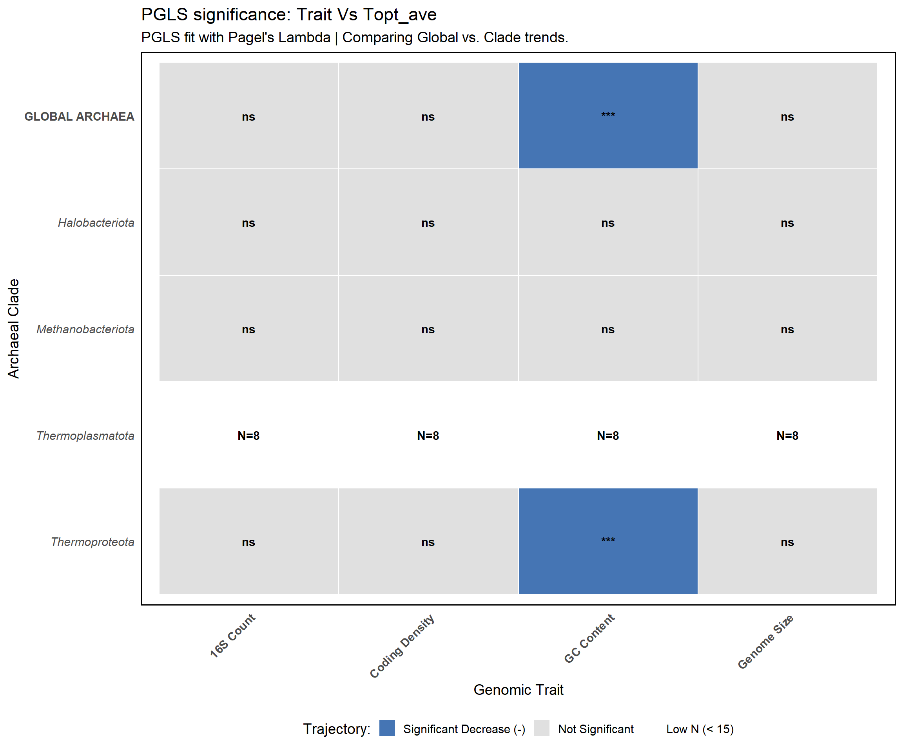
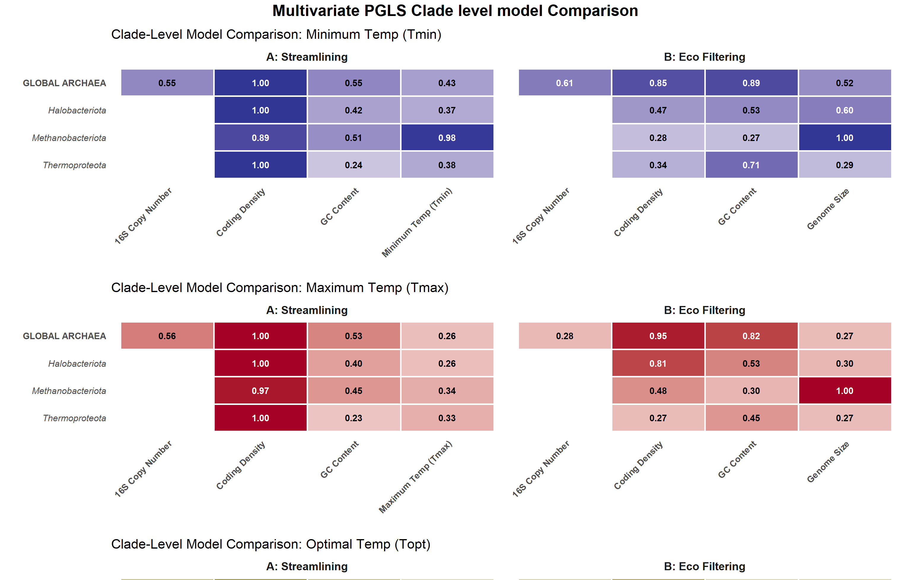
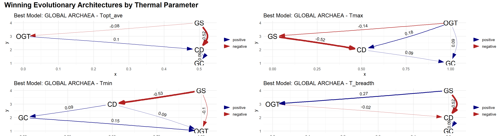
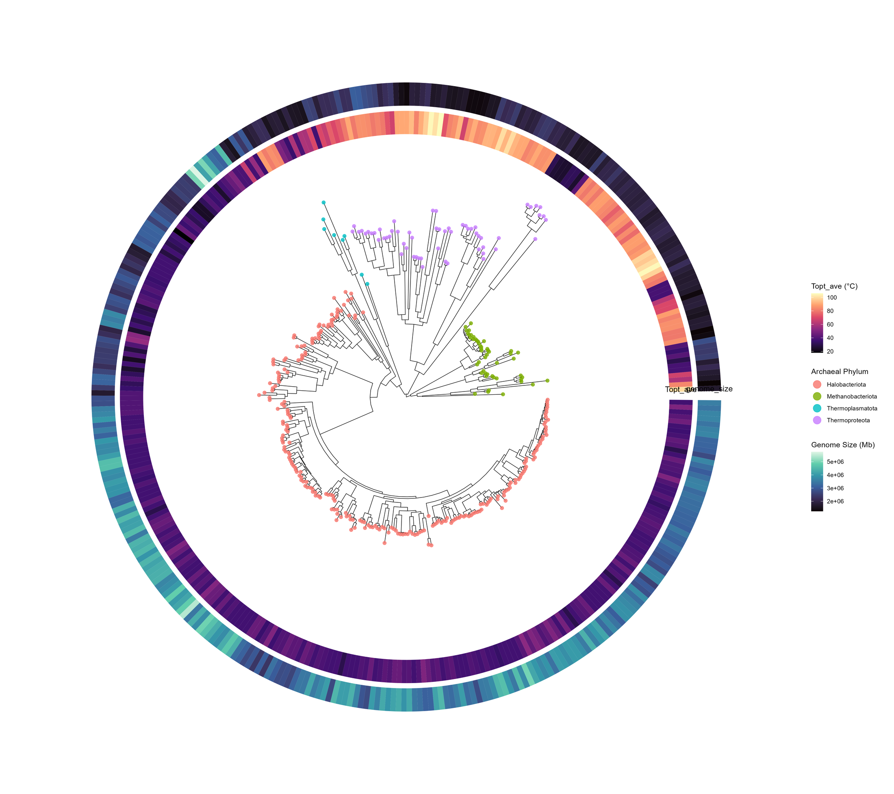

How Evolutionary History Shapes Thermal Adaptation in Prokaryotes
The full methodology behind the poster, step by step — from raw data quality checks through to the evolutionary model, across 5,023 archaeal genomes spanning 20 phyla. Follow along, or jump to any step above.
Checking our work
Two questions I asked of my own data before believing the result — this is the methodology walk-through in detail.


Red branches (left) are every genome with a real temperature measurement — they cluster in specific pockets of the tree, not spread evenly. The bar chart confirms why: the measured subset is dominated by Halobacteriota, while the unmeasured majority spans far more phyla. Any claim has to survive this imbalance, not ignore it.

Ancestral state reconstructions from the smaller, high-confidence tree land almost exactly on the same values as the full domain-wide tree, for every trait tested. A focused, well-measured dataset isn't a compromise here — it reconstructs the same deep history as the much larger one.
Which temperature variable actually moves the genome?
The correlation panel on the poster shows raw trait correlations before any correction — almost everything looks related. That's the problem: closely related genomes aren't independent data points, so shared ancestry alone can manufacture correlations that have nothing to do with adaptation. Run the same relationships through Phylogenetic Generalized Least Squares instead, and the picture changes:



Most of that "everything correlates with everything" pattern collapses. What survives: Tmin and Tmax turn out to be far stronger architectural constraints than Topt itself, which shows almost no significant structural relationships once phylogeny is properly accounted for.
Coding density — not genome size — is the universal driver, in every archaeal lineage
No single story fits all of Archaea by assumption — so this was run separately, phylum by phylum, rather than pooling everything into one global average. What came back was the same answer, independently, in each one:


Genome size → coding density edges of −0.4 to −0.66 recur in every clade's best-fit causal model. A smaller genome is a downstream consequence of tighter packing — not the trait selection targets directly.
But at the whole-domain level, phylogenetic path analysis is still ambiguous
A single "coding density wins" arrow, averaged across all of Archaea, hides which lineage did what and when — and the formal path analysis confirms there's no one dominant causal structure at that scale. To go further we have to stop asking "what wins on average" and start asking "what did the ancestor look like, and what path did each lineage take from there." That's a question about internal nodes, not tips — which means it's a question this page can let you ask yourself.
The ancestor of Archaea was hot and small — and that's the whole issue

Trace the rings inward: the deepest branches sit at high Topt (bright band) with small genomes (dark band) — a genome under permanent thermodynamic pressure. Every lineage that later moved toward cooler, less extreme temperatures shows the same pattern in reverse: genome size expands, coding density relaxes, complexity accumulates.
Now trace it yourself
One live, zoomable, rotatable explorer — the actual ancestral-state reconstructions behind the image above. Toggle between optimal, max, and min temperature, search for a species by name, or trace a lineage from root to tip and watch genome size and temperature move together (or not).
A genome-first rule for finding thermal limits — on Earth or elsewhere
- Recalibrate genomic thermometers per-domain before trusting sequence-only habitability calls
- Extend the coding-density framework to Bacteria to test whether the rule is truly universal
- Reconstruct ancestral coding density, not just genome size, to date when preadaptation first appears